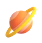

Fiche de révision · Sciences · CEB 6e primaire
Fiche de révision · Sciences · CEB 6e primaire

Le système solaireLa règle
- Le Soleil est une étoile ; 8 planètes tournent autour de lui.
- Dans l'ordre : Mercure, Vénus, la Terre, Mars (rocheuses), Jupiter, Saturne, Uranus, Neptune (planètes géantes : Jupiter et Saturne sont gazeuses, Uranus et Neptune sont des « géantes de glace »).
- Un satellite tourne autour d'une planète : la Lune est le satellite de la Terre.
Exemple
Jupiter est la plus grande planète ; Mercure est la plus proche du Soleil.
 Astuce
Astuce
« Me Voici Toute Mignonne, Je Suis Une Nébuleuse » : Mercure, Vénus, Terre, Mars, Jupiter, Saturne, Uranus, Neptune.
Comprendre la règle
Le Soleil est une étoile : une énorme boule de gaz très chaude qui produit sa propre lumière. Huit planètes tournent autour de lui. Dans l'ordre, en partant du Soleil : Mercure, Vénus, la Terre, Mars (des planètes rocheuses), puis Jupiter, Saturne, Uranus et Neptune (des planètes géantes).
La Terre tourne sur elle-même en 24 heures : c'est l'alternance du jour et de la nuit. Elle tourne autour du Soleil en un peu plus de 365 jours : c'est une année. La Lune, satellite de la Terre, tourne autour d'elle en un peu moins d'un mois ; elle ne produit pas de lumière, elle renvoie celle du Soleil.
Les planètes ne produisent pas de lumière : on les voit parce qu'elles sont éclairées par le Soleil. Les planètes les plus lointaines ont été découvertes tard : Uranus en 1781 et Neptune en 1846.
Exemples expliqués
- Jupiter et Mercure. Jupiter est la plus grande planète ; Mercure, la plus proche du Soleil.
- Le jour et la nuit. La Terre tourne sur elle-même : le côté tourné vers le Soleil est dans le jour.
- La Lune qui brille la nuit. Elle renvoie la lumière du Soleil.
- Mnémotechnique : « Me Voici Toute Mignonne, Je Suis Une Nébuleuse ». Mercure, Vénus, Terre, Mars, Jupiter, Saturne, Uranus, Neptune.
Les pièges du CEB
- Croire que le Soleil tourne autour de la Terre.
- Confondre étoile (produit sa lumière) et planète (éclairée).
- Compter Pluton parmi les planètes : depuis 2006, ce n'est plus le cas.
- Confondre la rotation (24 heures, jour et nuit) et le tour du Soleil (une année).
Ce que le CEB t'a déjà demandé
- CEB 2023 · livret 5 · question 8c La planète Neptune a été découverte en 1846, au 19e siècle : seule la scientifique qui vivait à ce moment-là pouvait l'avoir connue. Voir l'examen